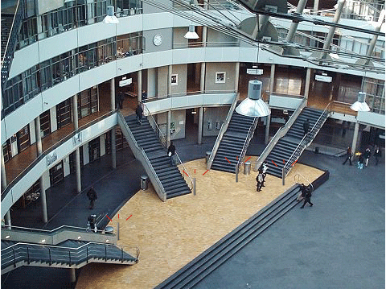
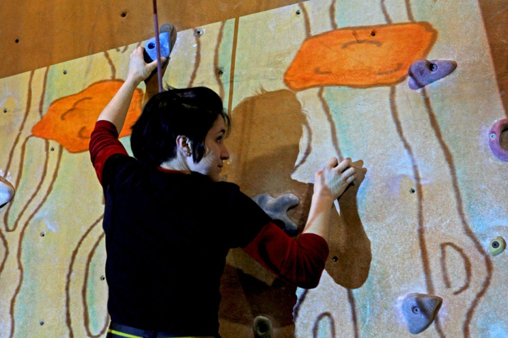

Exertion Gaming
Exertion Gaming is een manier om een spel te spelen en uitgeput te raken. Het is dus de bedoeling dat de gebruiker een spel speelt en dat de computer dit herkent en omzet in een actie die uit wordt gevoerd. Een voorbeeld hiervan is de Kinect voor de Xbox 260 of de Nintendo Wii.
Een Exertion Game die door mij is bedacht
Voor de studenten en de docenten op de Haagse Hogeschool heb ik een Exertion Game bedacht. Het idee wat mij leuk leek is iets, om echt voor meer beweging onder de studenten en docenten te zorgen. De school bestaat uit meerdere verdiepingen en meestal wordt de lift gebruikt. Zo bewegen we steeds minder en minder.
Om ook op school fit te blijven, kunnen we de trap nemen. Dit doen weinig mensen, dus het kan gemotiveerd worden door een spaaractie te starten. Voor iedere trap is er een incheckpaal aanwezig, waar een campuskaart voor gehouden moet worden. Bij de eindverdieping kan de kampuskaart weer voor de paal gehouden worden. Zo weet het systeem dat de persoon in kwestie klaar is met traplopen. Per verdieping worden zo de punten bij gehouden.

Bij een bepaald aantal punten, krijgt de gebruiker iets gratis in de kantine. Wel iets gezonds natuurlijk! 😉
Hiernaast staat een voorbeeld van de uitwerking van het idee. De paaltjes kunnen rechts bij de trappen worden geplaatst. Dit kan natuurlijk aanvoelen, omdat men meestal incheckt aan de rechterkant in het Openbaar Vervoer.
De techniek erachter kan geregeld worden met een chip die alle punten telt, die wordt geplaatst in de kampuskaarten. Door verschillende programma's te schrijven, zouden de punten bijgehouden kunnen worden en kan de gebruiker op de hoogte gehouden worden van de cadeau's die gegeven worden.
Voorbeelden van Exertion Games
Laughter Tree 🌳
 Het eerste spel wat ik als voorbeeld heb gevonden, trok mijn aandacht meteen. Het woord lachen staat er in en dat is iets belangrijks onder de samenleving. Het spel is gebasseerd op lach therapie. Bij dit spel gaat het om de lichaamstaal van kinderen, wat wordt vertaald naar verschillende beelden op het scherm. Het wordt voornamelijk gebruikt voor zieke kinderen, om ervoor te zorgen dat zij plezier kunnen hebben en kunnen bewegen.
Het eerste spel wat ik als voorbeeld heb gevonden, trok mijn aandacht meteen. Het woord lachen staat er in en dat is iets belangrijks onder de samenleving. Het spel is gebasseerd op lach therapie. Bij dit spel gaat het om de lichaamstaal van kinderen, wat wordt vertaald naar verschillende beelden op het scherm. Het wordt voornamelijk gebruikt voor zieke kinderen, om ervoor te zorgen dat zij plezier kunnen hebben en kunnen bewegen.
Het is een spel wat wordt gespeeld door een persoon en de bewegingen worden gedetecteerd door een camera. Deze camera neemt de bewegingen op en voegt hier beelden aan toe.
Bron:http://exertiongameslab.org/projects/laughter-tree
Waterfall Climber 🌊

Waterfall Climber is een spel wat ervoor zorgt dat, het echte bergklimmen wordt gecombineerd met een spel. Het spel wordt gespeeld doordat de spelers op een muur klimmen, waarachter een scherm staat. Hier worden rotsen van boven naar beneden gegooid en moet de speler wegduiken om niet geraakt te worden. Het waterniveau en de gezondheid van de speler, dalen wanneer de spelen wordt geraakt door een rots.Tijdens het spelen, wordt de speler ondersteund door iemand die vertelt of er rotsen aankomen, of welke kan hij of zij op moet. Zo wordt er gekeken naar de combinatie van hulp buitenaf met inspanning tijdens het spelen van het spel.
Door een scherm te gebruiken op de muur waar wordt geklommen en hier sensoren in te gebruiken, voelt het scherm wat de speler doet en wordt er weergegeven of de speler de rots heeft kunnen ontduiken of niet.
Bron:http://exertiongameslab.org/projects/waterfall-climber
Reflectie
Toen we begonnen aan het hoorcollege, had de docente meteen mijn aandacht. Het was eindelijk een vrouw! Vooraf wist ik dat dit een heel technisch vak zou worden en meestal zie ik niet veel vrouwen in die afdeling. Zo begon het meteen goed...
Voor het hoorcollege begon wist ik al dat we veel voorbeelden te zien zouden krijgen, maar ik dacht dat het altijd meer gezondheidsgericht zou zijn. Dit was niet het geval, of misschien toch wel maar het werd goed verborgen! Het onderwerp heeft altijd al mijn aandacht getrokken en dankzij dit hoorcollege heb ik nu de basis kennis over het onderwerp en weet ik zeker dat de toekomst heel breed gaat zijn. Door de creativiteit van de mensheid, zullen er steeds betere ontwikkelingen gedaan worden en worden er zeker weten steeds meer exertion games ontwikkeld.